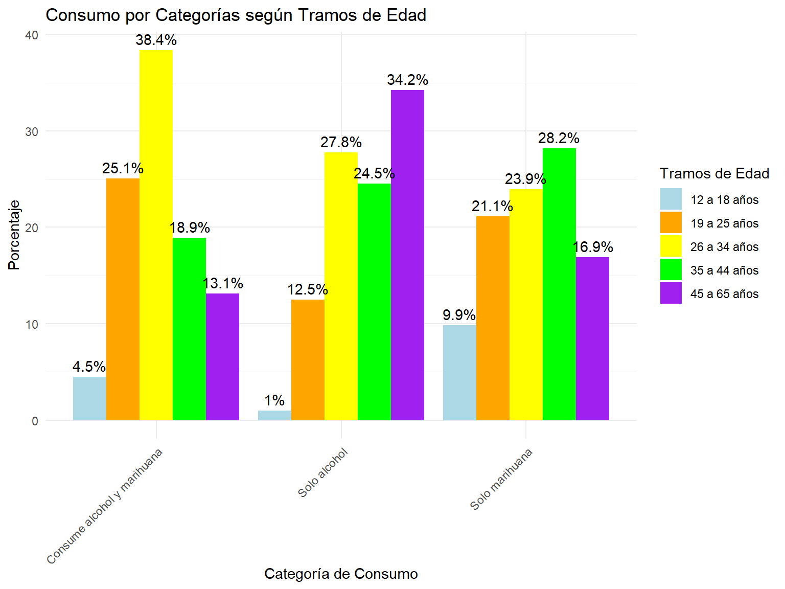
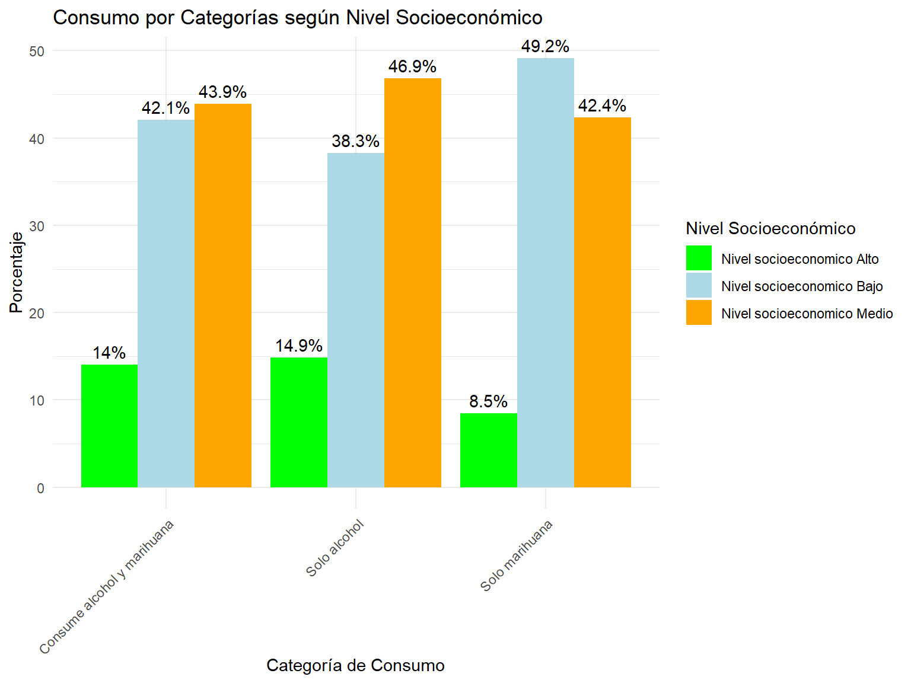

Patrones latentes de consumo, percepción de riego y acceso, en personas usuarias de alcohol y marihuana
Informe
Autores/as
Ariel Álvarez
Natalia Vacas González
Fecha de publicación
19 de enero de 2025
1 Antecedentes contextuales:
El alcohol y la marihuna son dos de las drogas más consumidas a nivel nacional y regional, en Chile.
En el último Estudio Nacional de Dogras en Población General (ENPG) en Chile, la prevalencia del consumo de alcohol en el último año alcanza un 53,6%. Mientras que la proporción de personas usuarias de marihuna en el último año es del 10,9% (Prevención y Rehabilitación del Consumo de Drogas y Alcohol (SENDA) 2024).
Así mismo, en la ENPG 2022 se destacan dos aspectos funamentales:
La tendencia a la baja en la prevalencia del consumo de alcohol (-4,9%) y del consumo de marihuna (-0,5%) en el último año, respecto a 2020.
La tendencia al alza en la percepción de riesgo asociada al uso de alcohol y marihuna (entre otras substancias).
Teniendo en cuenta este escenario general, el presente proyecto se enfoca en las personas usuarias de alcohol y/o marihuna; definidas como aquellas personas que han consumido alguna de estas substancias en el último años y en su percepción de riesgo y acceso a ambas substancias.
A continuación, se presenta el objetivo general y los objetivos específicos del caso.
2 Objetivos
2.1 Objetivo general:
Identificar patrones latentes de consumo, percepción de riego y acceso, en personas usuarias de alcohol y marihuana.
2.2 Objetivos específicos:
Describir las características socio demográficas de las personas consumidoras de alcohol y/ o marihuna en el último año, en Chile.
Analizar la relación entre la percepción de riego y el consumo de marihuna y/o alcohol.
Tipificar grupos de personas consumidoras de alcohol y marihuana integrando información socio demográfica e información sobre perceción de riesgo y acceso a una o ambas substancias.
3 Relevancia del caso de estudio:
El consumo extendido de susbtancias psicoactivas, tales como el alcohol y la marihuna, constituye un problema de salud pública con consecuencias tanto en el sistema asistencial, como en la productividad a lo largo de la vida, el entorno social y familiar y la salud de las personas usuarias de este tipo de substancias (Altamirano Altamirano, Catalán Sandoval, y González Sepúlveda 2024)
El informe “El Consumo de Alcohol en Chile: Situación Epidemiológica” (Prevención y Rehabilitación del Consumo de Drogas y Alcohol (SENDA) 2024) destaca el consumo de alcohol como principal factor de riesgo que causa muerte y discapacidad en Chile, representando el 12,4% de los años de vida saludables perdidos por muerte o discapacidad (AVISA). Junto a lo anterior, también se señala la dependencia del alcohol como una de las cuatro principales enfermedades que generan carga de enfermedad en el país, explicando un 7,7% de los AVISA perdidos.
Adicionalmente, el informe “Marihuana” (Prevención y Rehabilitación del Consumo de Drogas y Alcohol (SENDA) 2020) donde se destaca que Alrededor del 9% de los consumidores adultos desarrollan adicción a la marihuana. Este porcentaje aumenta al 17% si el consumo comienza en la adolescencia y al 25-50% en consumidores diarios. Además de los efectos adictivos, SENDA señala los efectos sobre la salud respiratoria, el incremento del riesgo de psicosis y el deficit cognitivo (particularmente en adolescentes), el desempeño académico y laboral, en términos de ausentismo y menor productividad y los riesgos cariovasculares.
En función de estos antecedentes, se vuelve relevante trazar una estrategia para la identificación de patrones latentes de consumo, percepción de riego y acceso, en personas usuarias de alcohol y marihuana en miras a:
Diseñar políticas y estrategias de intervención más específicas y efectivas para la población consumidora.
Priorizar recursos hacia grupos de mayor riesgo.
Promover una comprensión más matizada del consumo de estas substancias psicoactivas.
4 Selección de bases de datos y variables de trabajo:
# Union con bases y limpieza de enviromentsenda_full <-left_join(senda, senda_data, by ="folio")senda_full <-left_join(senda_full, senda_opinion, by ="folio")
5 Manipulación de la base
En este apartado vamos a limpiar las respuestas de la base, quitar NA, analizar si las respuestas abiertas aportan información relevante y recodificar respuestas a variables dummy para facilitar el posterior análisis.
Código
senda_full <- senda_full %>%mutate_all(~ifelse(. %in%c(88,99), NA, .)) #Valores NA
6 Estadísticos Descriptivos
Observando la base de la Encuesta Nacional de Drogas en la Población general en Chile. Se identifica que un 73% de la encuesta Sí ha consumido alguna vez en su vida algún tipo de alcohol. Mientras que un 29% reporta haber consumido alguna vez en su vida Marihuana.
Código
# Consumo Alcoholsenda_full %>%filter(!is.na(oh_1)) %>%mutate(`Consumo de Alcohol`=case_when( oh_1 ==1~"Sí consume", oh_1 ==2~"No consume" )) %>%count(`Consumo de Alcohol`) %>%mutate(Porcentaje =round(n /sum(n) *100, 1)) %>%arrange(desc(`Consumo de Alcohol`))
Código
#Consumo Marihuanasenda_full %>%filter(!is.na(mar_1)) %>%mutate(`Consumo de Marihuana`=case_when( mar_1 ==1~"Sí consume", mar_1 ==2~"No consume" )) %>%count(`Consumo de Marihuana`) %>%mutate(Porcentaje =round(n /sum(n) *100, 1)) %>%arrange(desc(`Consumo de Marihuana`))
Ahora con respecto a la última vez que consumieron algún tipo de droga y la frecuencia de consumo, observamos lo siguiente:
Sobre el consumo de alcohol: un 47% ha consumido alcohol duramente el último mes, un 19% hace más de un menos pero no menos de un año y un 34% hace más de un año. Mientras que la última vez que las personas que consumieron Marihuana se distruyen de la siguiente forma. un 21% reporta haber consumido Marihuana durante el último mes, un 9% hace más de un mes pero menos de un año y un 71% no consume marihuana hace más de un año.
Código
senda_full %>%filter(!is.na(oh_4)) %>%mutate(`Última vez consumido alcohol`=case_when( oh_4 ==1~"Durante los últimos 30 días", oh_4 ==2~"Hace más de un mes, pero menos de un año", oh_4 ==3~"Hace más de un año" )) %>%count(`Última vez consumido alcohol`) %>%mutate(Porcentaje =round(n /sum(n) *100, 1))
Código
senda_full %>%filter(!is.na(mar_4)) %>%mutate(`Última vez consumido Marihuana`=case_when( mar_4 ==1~"Durante los últimos 30 días", mar_4 ==2~"Hace más de un mes, pero menos de un año", mar_4 ==3~"Hace más de un año" )) %>%count(`Última vez consumido Marihuana`) %>%mutate(Porcentaje =round(n /sum(n) *100, 1))
En cuanto a la frecuencia de consumo semanal o mensual de alcohol de las personas se distrubuyen de la siguiente manera:
Un 13% informa no haber consumido alcohol últimamente, un 44% consume al menos 1 bebida alcoholica al mes, un 35% consume entre 2 a 4 veces al mes. Mientras que a nivel semanal un 6% consume 2 a 3 bebidas alcoholicas y un 3% consume 4 o más veces a la semana alguna bebida alcólica.
La variable sobre consumo de Marihuana fue recodificada en base al número de días que las personas afirmaron haber consumido durante el mes. Es decir, cuantos días al mes confirman haber consumido al menos 1 vez marihuana. Siendo agrupados en categorías similares al consumo del alcohol. Los resultados demuestran:
Un 11% consume al menos 1 vez al mes marihuana, un 17% consume de 2 a 4 veces al mes, un 19% consume 2 a 3 veces por semana marihuana y por último un 54% consume 4 o más veces marihuana a la semana.
Estos resultados permiten entender que las personas que consumen marihuana lo realizan con mayor frecuencia que las personas que consumen Alcohol. Esto puede deberse a la facilidad de conseguir marihuana, rutina o por los propios efectos que conlleva consumir marihuana. Obtenido el número de personas que consumen y su frecuencia, analizaremos factos sociodemográficos de consumidores.
Código
senda_full %>%filter(!is.na(oh_8)) %>%mutate(`Frecuencia de consumo Alcohol`=case_when( oh_8 ==0~"Nunca", oh_8 ==1~"1 vez al mes o menos", oh_8 ==2~"2 a 4 veces al mes", oh_8 ==3~"2 a 3 veces a la semana", oh_8 ==4~"4 o más veces a la semana")) %>%count(`Frecuencia de consumo Alcohol`) %>%mutate(Porcentaje =round(n /sum(n) *100, 1)) %>%arrange(desc(`Frecuencia de consumo Alcohol`))
Código
senda_full %>%filter(!is.na(mar_5)) %>%mutate(`Frecuencia de consumo Marihuana`=case_when( mar_5 ==1~"1 vez al mes o menos", mar_5 >=2& mar_5 <=4~"2 a 4 veces al mes", mar_5 >=5& mar_5 <=12~"2 a 3 veces a la semana", mar_5 >=13~"4 o más veces a la semana" )) %>%count(`Frecuencia de consumo Marihuana`) %>%mutate(Porcentaje =round(n /sum(n) *100, 1)) %>%arrange(desc(`Frecuencia de consumo Marihuana`))
7 Cruce de variables
Analizando las caracteristicas sociodemográficas de las personas que consumen alcohol o marihuana obtuvimos los siguientes resultados, por temas de análsis la variable de frecuencia de consumo (oh_4 y mar_04) fue recodificada sobre el último año. Es decir, si consumieron alcohol o marihuana durante el último año como valor 1, mientras que los demas resultados como valores restantes.
El análisis también se realizó observando la variación dentro de cada grupo y no a nivel total muestral. Es decir, nos interesaba saber cuanto hombres fuman dentro del grupo de hombres y así dentro de todas las categorías. Posteriormente en la visualización se realiza una comparación por grupo general.
7.1 Sexo
Cruce de sexo con alcohol
Sobre el consumo de Alcohol según sexo, se identifica que un 76% de los hombres ha consumido alguna vez Alcohol en su vida, mientras que las mujeres un 70% ha probado el Alcohol. En esta misma línea, la pregunta sobre si han consumido durante el último año, se identifica que: el 72% de los hombres ha consumido alcohol, mientras que el 61% de las mujeres ha consumido durante el último año.
Cruce de sexo con Marihuana
Sobre el consumo de Marihuana según sexo, el 36% de los hombres afirma haber probado la marihuana alguna vez en sus vidas, mientras que las mujeres en un 24%. Por su parte, el consumo de marihuana el último año es menor al consumo de alcohol. Un 15% de los hombres ha fumado marihuana el último año, mientras que solo un 8% de las mujeres ha fumado durante el último tiempo.
Código
# Cruce sexo con sí ha consumido alcoholsenda_full %>%filter(!is.na(sexo), !is.na(oh_1)) %>%mutate(Sexo =case_when( sexo ==1~"Hombre", sexo ==2~"Mujer" )) %>%group_by(Sexo) %>%mutate(Total_personas =n()) %>%filter(oh_1 ==1) %>%count(Sexo, Total_personas) %>%mutate(Porcentaje =round(n / Total_personas *100, 1))
Código
# Cruce sexo con sí ha consumido alcohol el último añosenda_full %>%filter(!is.na(sexo), !is.na(oh_4)) %>%mutate(Sexo =case_when( sexo ==1~"Hombre", sexo ==2~"Mujer")) %>%group_by(Sexo) %>%mutate(Total_personas =n()) %>%filter(oh_4 %in%c(1, 2)) %>%count(Sexo, Total_personas) %>%mutate(Porcentaje =round(n / Total_personas *100, 1))
Código
# Cruce sexo con sí ha consumido Marihuanasenda_full %>%filter(!is.na(sexo), !is.na(oh_1)) %>%mutate(Sexo =case_when( sexo ==1~"Hombre", sexo ==2~"Mujer" )) %>%group_by(Sexo) %>%mutate(Total_personas =n()) %>%filter(mar_1 ==1) %>%count(Sexo, Total_personas) %>%mutate(Porcentaje =round(n / Total_personas *100, 1))
Código
# Cruce sexo con sí ha consumido Marihuana el último añosenda_full %>%filter(!is.na(sexo), !is.na(oh_4)) %>%mutate(Sexo =case_when( sexo ==1~"Hombre", sexo ==2~"Mujer")) %>%group_by(Sexo) %>%mutate(Total_personas =n()) %>%filter(mar_4 %in%c(1, 2)) %>%count(Sexo, Total_personas) %>%mutate(Porcentaje =round(n / Total_personas *100, 1))
7.2 Tramos de edad
Edad y Alcohol
La variable edad fue agrupada en Tramos de edad para facilitar el análisis (Informe de Senda) y cruzado con las variable de sí ha consumido alguna vez en su vida alcohol y si ha consumido alcohol en el último mes.
Con respecto a si ha consumido alcohol alguna vez en su vida. Las personas menores de edad solo un 34% ha probado el alcohol siendo lógico con las restricciones de la ley en Chile sobre el consumo de Alcohol. Superado la mayoría de edad los porcentajes aumentan drásticamente en los grupos, siendo un 71% (19 a 25 años), 83% (26 a 34 años), 77% (35 a 44), y un 72% de personas sobre 44 años. Si bien estos resultados nos indican el acercamiento que han podido tener con el alcohol no es un indicio sobre frecuencia de consumo, por eso también se realizó un cruce con la última vez que han consumido alcohol resaltando las personas que consumieron durante el último mes.
Sobre si consumieron durante el año se distribuye de la siguiente forma. Las personas menores de edad un 21% ha consumido alcohol durante el último año. Del tramo de 19 a 25 años un 52% ha consumido alcohol, siguiendo un 62% del grupo de 26 a 34 años, un 54% de 35 a 44 años y por último un 42% de personas mayores a 45 años.
Edad y Marihuana
En la misma línea de análisis, se cruzo el tramo de edad por las variables de sí ha consumido alguna vez en su vida marihuana y si esto fue dentro del último año.
En cuanto al haber probado la marihuana, un 12% de las personas menores de edad afirma haber consumido esta droga. El resto de grupos se distrubuye de forma pareja en cuanto los grupos de 19 a 25 años (38%), 26 a 34 años (48%) y 35 a 44 años (34%). Este porcentaje disminuye con personas mayores a 45 años a un (19%).
Sobre si se ha consumido marihuana en el último año, las personas afirman lo siguiente: Menores de edad solo un 7% ha consumido marihuana, siguiendo con un 17% de 19 a 25 años, un 17% de 26 a 34 años, un 9% de 35 a 44 años y mayores de 45 solo un 3%.
Código
senda_full <- senda_full %>%mutate(tramos_edad =case_when( edad >=12& edad <=18~"12 a 18 años", edad >=19& edad <=25~"19 a 25 años", edad >=26& edad <=34~"26 a 34 años", edad >=35& edad <=44~"35 a 44 años", edad >=45& edad <=65~"45 a 65 años" ))# Cruce Tramos de edad y Sí consume Alcoholsenda_full %>%filter(!is.na(tramos_edad)) %>%group_by(tramos_edad) %>%mutate(Total_personas =n()) %>%filter(oh_1 ==1) %>%count(tramos_edad, Total_personas) %>%mutate(Porcentaje =round(n / Total_personas *100, 1))
Código
# Cruce Tramos de edad y consumo de alcohol en los últimos 30 díassenda_full %>%filter(!is.na(tramos_edad)) %>%group_by(tramos_edad) %>%mutate(Total_personas =n()) %>%filter(oh_4 %in%c(1, 2)) %>%count(tramos_edad, Total_personas) %>%mutate(Porcentaje =round(n / Total_personas *100, 1))
Código
# Cruce Tramos de edad y Sí consume Marihuanasenda_full %>%filter(!is.na(tramos_edad)) %>%group_by(tramos_edad) %>%mutate(Total_personas =n()) %>%filter(mar_1 ==1) %>%count(tramos_edad, Total_personas) %>%mutate(Porcentaje =round(n / Total_personas *100, 1))
Código
# Cruce Tramos de edad y consumo de Marihuana en los últimos 30 díassenda_full %>%filter(!is.na(tramos_edad)) %>%group_by(tramos_edad) %>%mutate(Total_personas =n()) %>%filter(mar_4 %in%c(1, 2)) %>%count(tramos_edad, Total_personas) %>%mutate(Porcentaje =round(n / Total_personas *100, 1))
7.3 Nivel educacional
Sobre el nivel educacional y el consumo de Alcohol y Marihuana hemos observado patrones bastantes llamativos sobre el nivel educacional. La variable original DP_12 fue recodificada y agrupada en grupos para facilitar el análisis, siendo codificadas en grupos de “Sin educación”, “sistema antiguo” y educación básica, media, técnica, universitaria y postgrados.
Estos resultados si bien pueden no ser tan representativos debido al número de casos que compone cada grupo, siendo los niveles de mayor educación los grupos con menor casos, mientras que niveles básicos y medios contemplan una mayor cantidad de personas.
Nivel educacional y Alcohol
Sobre el consumo de alcohol según nivel educacional identificamos que las personas con menor porcentaje de haber consumido alguna vez alcohol en sus vidas son personas sin educación con un 54%, si bien este resultado puede ser no tan confiable debido a los pocos casos que hay en la base. Por tanto, las personas con solo educación básica también presentan un porcentaje menor a los otros grupos con un 62%. Los niveles educacionales que más han probado el alcohol son las personas con grado universitario 81% y con postgrado 87%.
En cuanto si han consumido alguna bebida alcoholica en el último año, las personas sin educación y con educación básica presentan nuevamente los menores porcentajes con un 23% y un 31% respectivamente. Mientras que los niveles más altos de universitarios y postgrados presentan mayores porcentajes de haber consumido alcohol el último año con un 58% y 67% respectivamente.
Nivel educacional y Marihuana
Analizando el consumo de Marihuana y nivel educacional encontramos que: las personas sin educación y con nivel educacional bajo un pequeño porcentaje ha probado alguna vez la marihuana con un 9% y 15% respectivamente, mientras la casi la mayoría de peersonas con grado universitario y de postgrado ha consumido marihuana alguna vez en su vida con un 41% y 44% respectivamente.
Sin embargo, los porcentajes disminuyen cuando se analiza si han consumido marihuana durante el último año. Donde las personas con educación básica, media y del sistema antiguo (4%, 7% y 5%) presentan menos frecuencia de consumo a diferencia de los grupos más educados con formación técnica, universitaria y de postgrados (11%, 13% y 12%). Esto podría estar fundado en los espacios de sociabilización que tiene cada grupo dentro de sus espacios siendo una droga común o de fácil acceso entre ellos.
# Nivel educacional por alcohol en 30 díassenda_full %>%filter(!is.na(educ)) %>%group_by(educ) %>%mutate(Total_personas =n()) %>%filter(oh_4 %in%c(1, 2)) %>%count(educ, Total_personas) %>%mutate(Porcentaje =round(n / Total_personas *100, 1))
Código
# Nivel educacional por Marihuanasenda_full %>%filter(!is.na(educ)) %>%group_by(educ) %>%mutate(Total_personas =n()) %>%filter(mar_1 ==1) %>%count(educ, Total_personas) %>%mutate(Porcentaje =round(n / Total_personas *100, 1))
Código
# Nivel educacional por Marihuana en 30 díassenda_full %>%filter(!is.na(educ)) %>%group_by(educ) %>%mutate(Total_personas =n()) %>%filter(mar_4 %in%c(1, 2)) %>%# Filtrar por mar_4 igual a 1 o 2count(educ, Total_personas) %>%mutate(Porcentaje =round(n / Total_personas *100, 1))
7.4 Tramos de ingresos
Observando los datos según tramos de ingresos, estos fueron agrupados en nivel socioeconomicos bajo, medio y alto. El informe de SENDA (2022) categoriza el nivel socioeconomico en a la calidad de la vivienda y el barrio. En nuestra investigación la justificación de variable de nivel socioeconomica será en base al tramo de ingresos que se encuetra la persona de la variable (DP_16).
Tramo de ingresos y alcohol
La mayoría de nivel socioecómicos han consumido alguna vez alcohol, con una tasa sobre el 71% de haber probado alcohol. En cuanto al consumo en el último año, los datos varían en mayor medida. Siendo el nivel bajo con un 42%, nivel medio con 55% y nivel alto con un 59%.
Tramo de ingresos y marihuana
El cruce entre tramo de ingreso y consumo de marihuana, resulta en que las personas con nivel socioeconomico bajo un 26% ha probado la marihuana al menos una vez, mientras que el nivel medio solo un 35% y el nivel alto un 40%. Este patrón se mantiene sobre si han consumido durante el últoimo año. El nivel bajo un 7% afirma haber fumado algun tipo de marihuana, seguido con 10% de la gente de nivel medio y un 12% del nivel alto.
# Tramo de ingreso por Marihuanasenda_full %>%filter(!is.na(nse)) %>%group_by(nse) %>%mutate(Total_personas =n()) %>%filter(mar_1 ==1) %>%count(nse, Total_personas) %>%mutate(Porcentaje =round(n / Total_personas *100, 1))
Código
# Tramo de ingreso por Marihuana últimos 30 días senda_full %>%filter(!is.na(nse)) %>%group_by(nse) %>%mutate(Total_personas =n()) %>%filter(mar_4 %in%c(1, 2)) %>%count(nse, Total_personas) %>%mutate(Porcentaje =round(n / Total_personas *100, 1))
8 Gráficos
Para visualización de nuestros datos y cruce de variables, hemos generado dos nuevas variables de agrupación para futuros análisis. En primer lugar, formulamos una variable de “Prueba” sobre el cruce de las variables oh_1 y mar_1 donde se distribuyen en 4 grupos dependiendo si han probado alguna vez ambas drogas, solo alcohol o marihuana o ninguna de las dos. También generamos una nueva variable de consumo durante el último año, esta nueva variable se desprende de las personas que afirman haber probado alcohol o marihuana. Esta variable tiene 3 grupos en base a las variables oh_4 y mar_4, donde el grupo 1 son las personas que han consumido alcohol y marihuana durante el último año, 2 personas que solo han han consumido alcohol durante el último año y 3 personas que solo han consumiendo marihuana durante el último año.
Código
senda_gr <- senda_full %>%select(oh_1, oh_4, mar_1, mar_4, edad, tramos_edad, sexo, educ, nse) %>%mutate(prueba =case_when( # PERSONAS QUE HAN PROBADO oh_1 ==2& mar_1 ==2~1, # No han probado nada oh_1 ==1& mar_1 ==2~2, # Han probado solo alcohol oh_1 ==2& mar_1 ==1~3, # Han probado solo marihuana oh_1 ==1& mar_1 ==1~4# Han probado ambas )) %>%mutate_all(~ifelse(. %in%c(88,99), NA, .))senda_gr$prueba <-factor(senda_gr$prueba, levels =c("1", "2", "3", "4"), labels =c("No han probado nada", "Solo alcohol", "Solo marihuana", "Probaron ambas"))# Creación de variable de consumo#alcohol anosenda_gr$oh_ano <-NAsenda_gr$oh_ano <-ifelse( senda_gr$oh_1 ==1,ifelse(senda_gr$oh_4 %in%c(1, 2), 1,ifelse(senda_gr$oh_4 %in%c(3, 88, 99), 0, NA)),NA)# marihuana anosenda_gr$mar_ano <-NAsenda_gr$mar_ano <-ifelse( senda_gr$mar_1 ==1,ifelse(senda_gr$mar_4 %in%c(1, 2), 1,ifelse(senda_gr$mar_4 %in%c(3, 88, 99), 0, NA)),NA)senda_gr <- senda_gr %>%mutate(consumo =case_when( oh_ano ==1& mar_ano ==1~1, # Personas que consumen alcohol y marihuana oh_ano ==1& mar_ano ==0~2, # Personas que consume solo alcohol oh_ano ==0& mar_ano ==1~3, # Personas que consume solo marihuana ))senda_gr$consumo <-factor(senda_gr$consumo, levels =c("1", "2", "3"), labels =c("Consume alcohol y marihuana", "Solo alcohol", "Solo marihuana"))
Código
# Manipulación para graficar gráfico de Sexo y consumosenda_gr$consumo <-as.factor(senda_gr$consumo)senda_gr$sexo <-as.factor(senda_gr$sexo)# Etiqueta de variable consumosenda_gr$sexo <-factor(senda_gr$sexo, levels =c("1", "2"), labels =c("Hombre", "Mujer"))# Valores NAsenda_gr <- senda_gr %>%filter(!is.na(consumo))senda_gr <- senda_gr %>%filter(!is.na(sexo))
8.1 Gráfico de Sexo por consumo de droga el último año
En cuanto a la variable sexo, los hombres lideran el consumo en las tres categorías, consumo de alcohol y marihuana, consumo exclusivo de alcohol y consumo exclusivo de marihuana. Sin embargo, en la categoría de consumo simultaneo de alcohol y marihuana, existe mayor disparidad en la composición por sexo; el consumo de ambas substancias está más presente en hombres (61,3%) que en mujeres (38,7%).
Sin embargo, en la categoría de consumo exclusivo de alcohol, el consumo de mujeres (48,3%) y hombres (51,7%) se encuentra más cercano.
Código
# Grafico Sexosenda_porcentaje_sexo <- senda_gr %>%filter(!is.na(sexo)) %>%group_by(consumo, sexo) %>%summarise(N =n(), .groups ="drop") %>%group_by(consumo) %>%mutate(porcentaje = N /sum(N) *100) # Gráfico N°1grafico_1 <-ggplot(senda_porcentaje_sexo, aes(x = consumo, y = porcentaje, fill = sexo)) +geom_bar(stat ="identity", position ="dodge") +geom_text(aes(label =paste0(round(porcentaje, 1), "%")),position =position_dodge(width =0.9),vjust =-0.5 ) +scale_fill_manual(values =c("Hombre"="cyan", "Mujer"="purple")) +labs(title ="Consumo por Categorías según Sexo",x ="Categoría de Consumo",y ="Porcentaje",fill ="Sexo" ) +theme_minimal() +theme(axis.text.x =element_text(angle =45, hjust =1))grafico_1

8.2 Gráfico de Tramos de edad por consumo de droga el último año
Respecto al consumo de alcohol y marihuana en relación a los tramos etarios es posible realizar el segundo desglose según substancia: - Consumo simultaneo de alcohol y marihuana: la mayor prevalencia de este tipo de consumo se da en las personas con edades comprendidas entre 26 y 34 años (38,4%), seguidas de aquellas entre 19 y 25 años (25,1%) - Consumo exclusivo de alcohol: este tipo de consumo es más prevalente en personas entre los 45 y 65 años (34,2%) - Consumo exclusivo de marihuana: si bien los porcentajes de prevalencia de este tipo de consumo por cohorte etaria no son tan dispares, el grupo etario que muestra mayor consumo exclusivo de marihuana es el conformado por personas entre 35 y 44 años (28,2%). Junto a lo anterior, llama particularmente la atención la prevalencia del consumo de marihuana en menores de edad (9,9% del total de la composición etaria de este grupo de personas consumidoras)
Código
senda_porcentaje_edad <- senda_gr %>%filter(!is.na(tramos_edad)) %>%group_by(consumo, tramos_edad) %>%summarise(N =n(), .groups ="drop") %>%group_by(consumo) %>%mutate(porcentaje = N /sum(N) *100) # Gráfico N°2grafico_2 <-ggplot(senda_porcentaje_edad, aes(x = consumo, y = porcentaje, fill = tramos_edad)) +geom_bar(stat ="identity", position ="dodge") +geom_text(aes(label =paste0(round(porcentaje, 1), "%")),position =position_dodge(width =0.9),vjust =-0.5 ) +scale_fill_manual(values =c("12 a 18 años"="lightblue", "19 a 25 años"="orange", "26 a 34 años"="yellow", "35 a 44 años"="green", "45 a 65 años"="purple")) +labs(title ="Consumo por Categorías según Tramos de Edad",x ="Categoría de Consumo",y ="Porcentaje",fill ="Tramos de Edad" ) +theme_minimal() +theme(axis.text.x =element_text(angle =45, hjust =1))grafico_2
8.3 Gráfico de NSE por consumo de droga el último año
Por último, en relación a la frecuencia relativa de consumo de alcohol y/o marihuana según nivel socioeconómico, caben destacar los siguientes hallazgos. (1) La personas que pertenecen al nivel socioeconómico medio y bajo poseen prevalencias de consumo simultaneo similares, con un 43,9% y un 42,1% respectivamente. (2) En el consumo exclusivo de alcohol predomina el grupo socioeconómico medio (46,9%), mientras que cuando se trata de consumo exclusivo de marihuana la mayor frecuencia se da en el nivel socioeconómico más bajo (49,2%).
Código
# Calcular porcentajes por consumo y nivel socioeconómico, pero sobre el total de consumosenda_porcentaje_nse <- senda_gr %>%filter(!is.na(nse)) %>%# Eliminar filas donde nse es NAgroup_by(consumo, nse) %>%summarise(N =n(), .groups ="drop") %>%group_by(consumo) %>%# Agrupar por consumo para calcular el porcentaje sobre cada consumomutate(porcentaje = N /sum(N) *100) # Calcular el porcentaje sobre el total de cada consumo# Gráficoggplot(senda_porcentaje_nse, aes(x = consumo, y = porcentaje, fill = nse)) +geom_bar(stat ="identity", position ="dodge") +geom_text(aes(label =paste0(round(porcentaje, 1), "%")),position =position_dodge(width =0.9),vjust =-0.5 ) +scale_fill_manual(values =c("Nivel socioeconomico Bajo"="lightblue", "Nivel socioeconomico Medio"="orange", "Nivel socioeconomico Alto"="green")) +# Colores personalizadoslabs(title ="Consumo por Categorías según Nivel Socioeconómico",x ="Categoría de Consumo",y ="Porcentaje",fill ="Nivel Socioeconómico" ) +theme_minimal() +theme(axis.text.x =element_text(angle =45, hjust =1))

9 Pasos a seguir:
Nuestros siguientes pasos a seguir para continuar con nuestra investigación y realizar un modelo no supervisado de clustering es:
Continuar preparando la base de datos, si bien realizamos tecnicas exploratorias como frecuencias y visualización de datos, existen otras varaibles que podrían ser importantes para continuar nuestro trabajo como datos de opinión pública, percepción de riesgo y accesibilidad a drogas.
Una vez preparada la base realizar modelos de clustering de forma exploratoria
Analizar las posibles agrupaciones
Concluir nuestra investigación en base a nuestros objetivos especificos.
Código
# Datos de percepciónsenda_full <- senda_full %>%mutate(across(starts_with("pr"), ~case_when( . %in% (1) ~0, # Valores 1 ningun riesgo se mantiene pero como 0 . %in%c(2, 3, 4) ~1, # Valores que identifican algún riesgo se codifican como 1 de algún riesgoTRUE~NA_real_# Valores NA ))) %>%mutate(across(starts_with("pr"), ~factor(., levels =c(0, 1),labels =c("Ningún riesgo", "Algún riesgo"))))#Checktable(senda_full$pr_1_2_rp)
Ningún riesgo Algún riesgo
505 8074
Código
# Datos de opinión públicasenda_full <- senda_full %>%mutate(across(starts_with("op"), ~case_when( . %in%c(1, 2) ~1, # Valores 1 y 2 se recodifican como 1 . %in%c(3, 4) ~0, # Valores 3 y 4 se recodifican como 0TRUE~NA_real_ ))) %>%mutate(across(starts_with("op"), ~factor(., levels =c(1, 0),labels =c("Estoy de acuerdo", "No estoy de acuerdo"))))#Checktable(senda_full$op_1_1_rp)
Estoy de acuerdo No estoy de acuerdo
6142 2211
Referencias
Altamirano Altamirano, Bárbara Estefanía, Cristopher Eduardo Catalán Sandoval, y Mauricio González Sepúlveda. 2024. «Percepción de riesgo en torno al consumo de alcohol, marihuana y cocaína que tienen estudiantes de educación superior en una universidad pública de la región de los Lagos». LATAM Revista Latinoamericana de Ciencias Sociales y Humanidades 5 (6): 2817-31. https://doi.org/10.56712/latam.v5i6.3207.